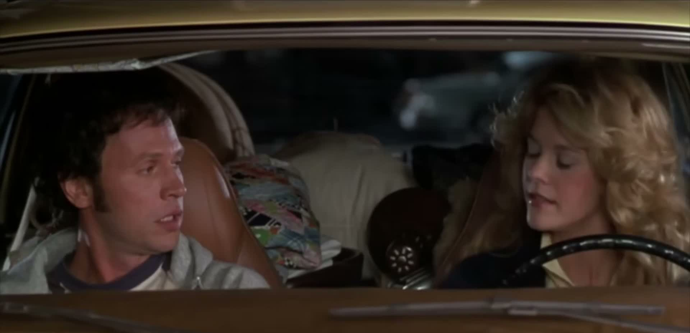

One Recording, Many Cameras
Audio-Grounded Novel-View Synthesis for Dialogue Re-Cinematography
Abstract
Dialogue video editing relies on multiple camera views to cut between speakers. Capturing such coverage is costly and often unavailable. We introduce dialogue re-cinematography, the task of synthesizing missing cinematic coverage from a single source dialogue video recording. Unlike existing novel-view video generation methods, dialogue re-cinematography must preserve the recorded speech, timing, gestures, and reactions under substantial viewpoint changes. This is challenging because novel viewpoints expose facial regions that are unseen in the source recording, requiring the model to hallucinate realistic appearance and motions for these regions. But, speech audio is invariant to viewpoint. Therefore, our approach is to treat this audio as a common anchor linking all possible views of a recorded performance. This viewpoint-independent representation enables consistent lip articulation even when the target view reveals facial regions that are entirely unseen in the source recording. We combine this audio anchor with source-video conditioning, which preserves the recorded timing, gestures, and reactions, while a target-view reference image specifies the desired novel viewpoint. Since naively applying audio guidance can animate silent participants in multi-person scenes, we introduce speaker-aware audio gating that selectively suppresses audio conditioning for non-speaking faces. Experiments on paired multi-view dialogue data and in-the-wild videos demonstrate that our approach synthesizes faithful cinematic coverage, improving lip synchronization on heavily occluded faces by over 40% and reducing false speech animation on silent listeners by over 70%, enabling multi-shot dialogue coverage from a single recorded take.
Interactive demo
Click a camera to switch views. Click the monitor to play or pause.

OTS over-the-shoulder · CU close-up